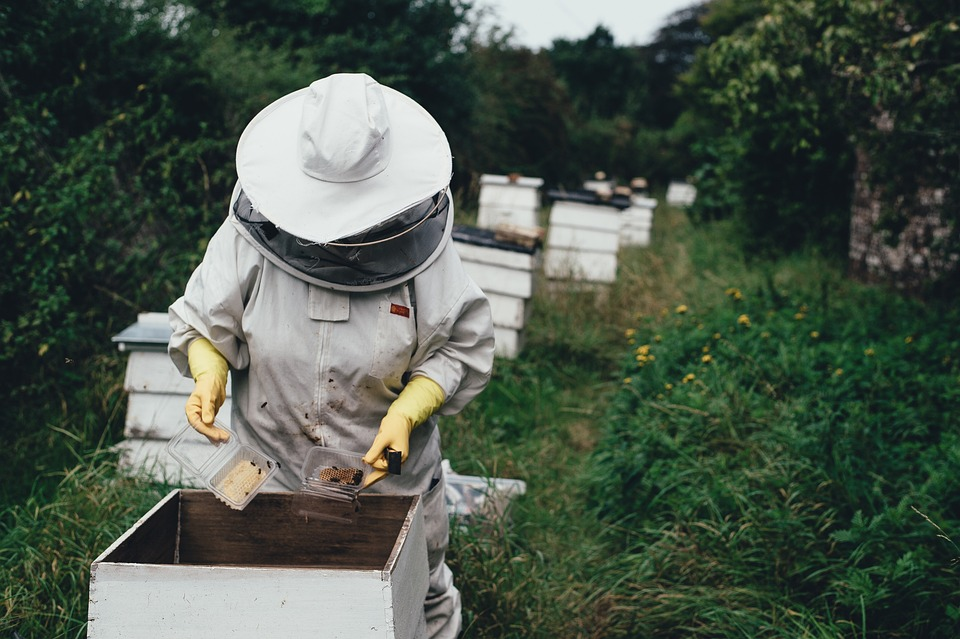
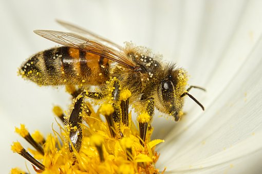

How are We Harming Bees?
Bees are seen everywhere during the spring and summer as they collect pollen and can be found in a variety of beekeeping farms. Both of these environments are threatening the lives of bees and have only increased over time as big corporations become more profitable. This is due to bees losing their habitats, extreme farming practices, climate change, and pesticides used on plants. Air pollutants also pose a risk to bees being able to locate pollen as it can alter the smell of the air leading to bees not being able to find flowers at all. Bees being transported from farm to farm can lead to many deaths as they are not able to leave the hive during travel and being handled improperly can lead to parasites and diseases among the colonies. All of these factors are pushing bees to extinction and will only increase if we as humans do not change the way we are treating the environment.
Inhumane Beekeeping Companies
- Tesco Organic Honey
- Asda
- Morrisons
- Marks and Spencers Honey
How Can We Save the Bees?
The world is starting to see how beneficial pollinators can be to the environment and why we need to protect them to survive. As countries all over the globe recognize the need to take action against climate change and mass extinctions they have also considered how bees are at risk from these changes as well. There have been strides in educating the world and trying to pass bills that are effective in reducing and banning the use of pesticides. In Europe scientists believe crop diversity, combating climate change, focusing on habitat conservation, and promoting biodiversity would be some of the key elements to sustaing the lives of bees and life itself. The government is responsible in making these changes and without awareness of this cause the people would not be able to voice their concerns and get the ball rolling on making these things possible. National bees day is one way we have spread awareness about these issues and ways people can change their day to day life to help reduce harm on pollinators.
Changes You Can Make at Home
- Vote for bills that reduce pesticide use
- Buy honey from farmer markets and companies that use humane harvesting methods
- Reduce air pollution with recycling and limit the use of fossil fuels
- Support green movements and donate to local farmers